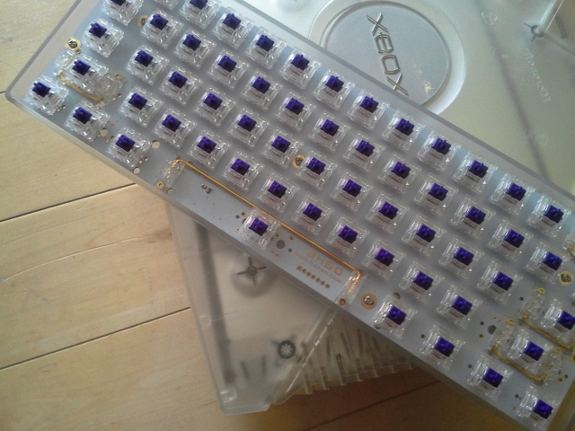

About Me

Hello! I am a computer science student at the University of
Waterloo in my third year. I love computer science and math
and have a passion for developing software that has an
impact on other people.
I have worked as a developer of
commercial software, but I am interested in many facets
of computer science. From developing games to research,
there is a lot more that I would like to explore.
I love creating things, and I love to learn new tools to
help me do so. As a result, I am comfortable being put
into situations where I have to overcome a learning curve
in order to perform well.
Skills
-
Source Control
- Git: Work experience with GitLab and personal GitHub experience
- Perforce: Work Experience
-
Programming Languages
- C: In-class experience (CS136, CS350, CS341)
- C++: Project experience (Affign) and in-class experience (CS246, CS240)
- C#: Work Experience
- Rust: Project experience (Inventorium)
- Racket: Project experience (WLM Compiler, UW Menu) and in-class experience (CS135, CS241)
- Rust: Project experience (Inventorium)
- HTML, CSS: Project experience (This website!)
-
Development Tools/Frameworks/Libraries
- WPF: Work Experience
- Bash Scripting: Personal Unix use and in-class experience (CS246)
- OpenCV: Project experience (Affign)
- wxWidgets: Project experience (Affign)
- ggez: Project Experience (Inventorium)
- CMake: Project Experience (Affign)
Projects
Affign
Affign is a desktop application that uses facial landmark detection to automatically align a sequence of images that contain a human face. It is useful for 'photo-a-day' projects like mine, featured below. The first version allowed users to run input images through Affign using an intuitive GUI that was implemented in wxWidgets, as pictured to the right. The current version is a command line tool instead, and was refactored to only rely on OpenCV. The aligned images can be output in video or various image formats, ultimately producing a smoother effect. Affign makes it incredibly easy to align large sets of images that are typical in photo-a-day projects. The source code, release files and wiki are available on the Github page. The project is built in C++ using OpenCV for face detection/landmarking and image manipulation.
|
A small section of my photo-a-day project before alignment |
After alignment with Affign |

|

|
Inventorium
Inventorium is my game created in under 48 hours for Ludum Dare 42 (international)
game jam. I
used the opportunity to do my first real project in Rust and used the ggez game
engine. Unfortunately I had to restart on the final day and only ended up with 12
hours to complete the game. I decided to create a simple arcade style game with
very simple graphics due to the time constraints. I managed to finish 506th overall
out of over 3000 submitted games, which is lower than I would have liked. I did better
in the "theme" and "fun" categories at rank 153 and 269 respectively.
The theme for the jam was "running out of space." The game consists of a simple arena
with coins to collect for points that spawn enemies and give you ammo. Getting hit
by an enemy or missing a shot will shrink the walls inwards until the game ends at
zero area. Hitting enemies and getting coins increases the score, and the goal is
to maximize your score.
The experience was quite fun, and I intend to continue participating in Ludum
Dare and other game jams in the future. The game is on GitHub with source and
binaries available here.
Work
Nuance Communications
| May 1, 2018 - August 24, 2018 | Software Developer Co‑op | I worked at Nuance's Waterloo Office as a software developer for a co-op term. I was initially working as a backend developer but took on the responsibilities of a full stack developer as we lost resources on the team. We developed in C# using WPF as our UI framework. I learned an enormous amount during this work term and greatly enjoyed the team and company culture. |
Hobbies
Keyboards
I collect mechanical keyboards and also have started to build my own (pictured on the right). Mechanical keyboards are desired by enthusiast typists and gamers because each key is a separate, physical switch rather than a connected membrane of rubber domes that collapse on many modern keyboards. This system provides a satisfying experience that is ideal for fast typing because with certain switches it is clear exactly when a key is pressed. Mechanical keyboards tend to be more durable and last much longer than membrane keyboards as well.